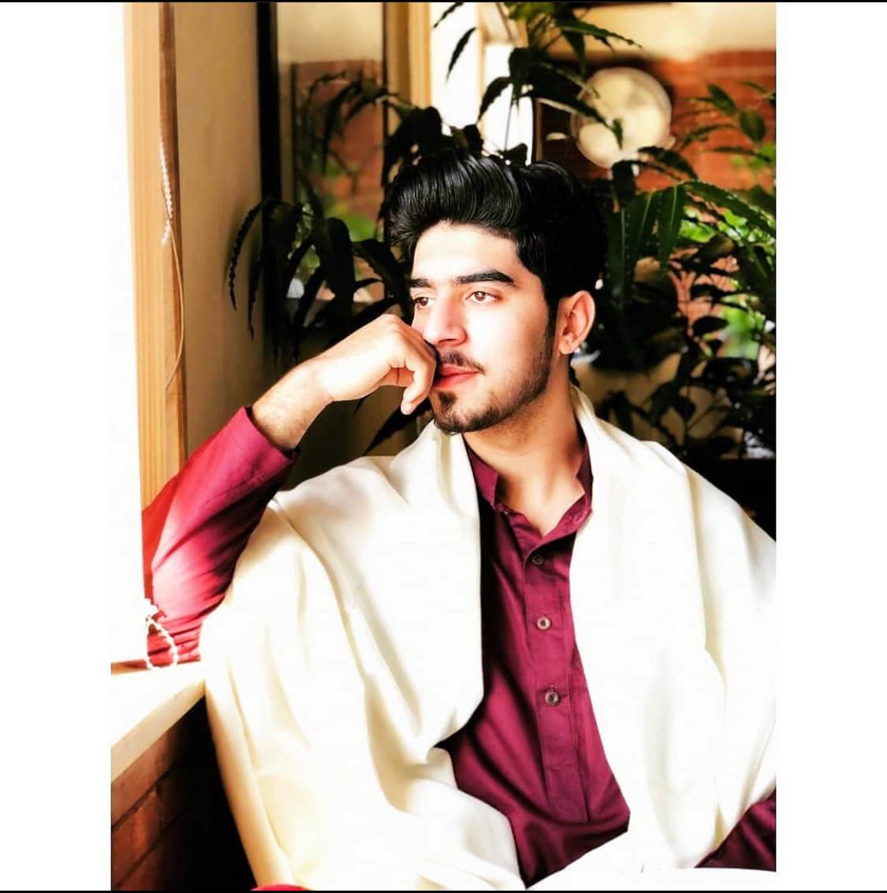
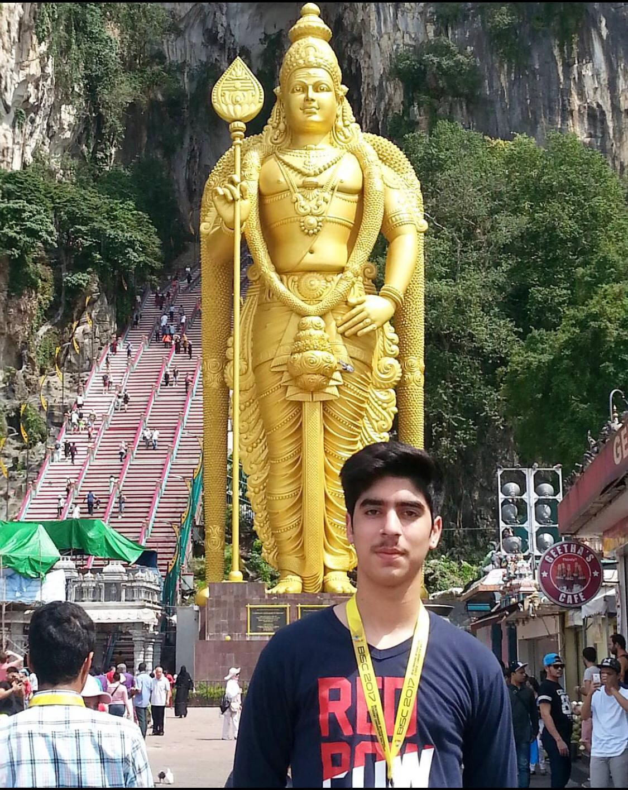
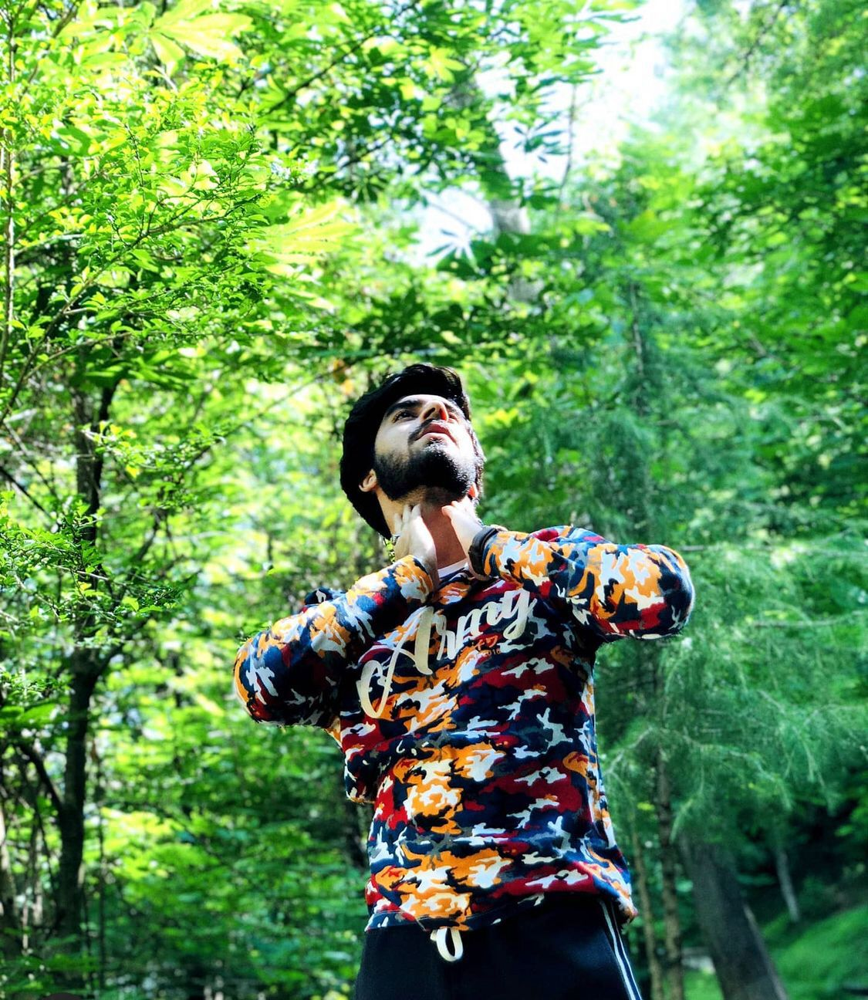

To commence, my name is Muhammad Asad Ullah. I grew up in Pakistan and currently living in Winnipeg MB, Canada. Traditionally, Pakistani families are patriarchal and patrilineal. In this way, the senior male is the head of the household, followed by the senior female, and finally, the children. Furthermore, my interest has been in building websites ever since I got to know the procedure or coding behind them. So, I chose the software developer program in winter 2021. I have an urge to learn new things and new coding styles.
Lastly, in my free time I prefer to learn more coding skills. As I was an international badminton player back home, I tried to gather my friend and go to play badminton. It is my dream to represent my country in the Olympics.
Besides all that, I love to travel and explore nature. I have travelled to numerous number of northern area's in Pakistan. Every area has different cultures but I have seen humanity and humility of them towards travellers, and they provide best service, and now it's time to explore the world.
